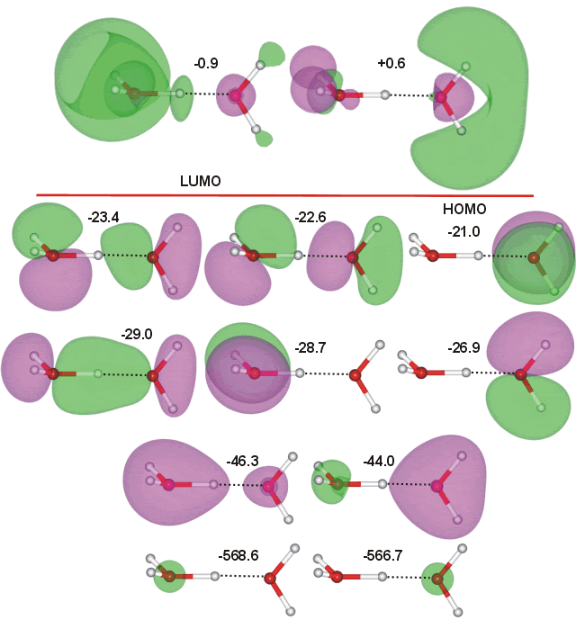
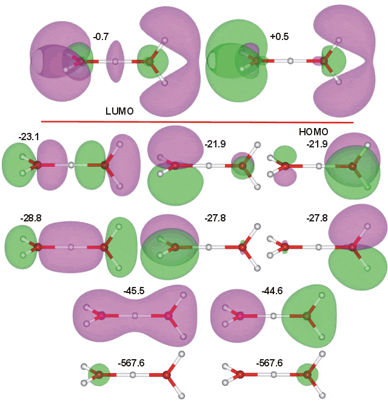

Two structures of H3O+-H2O exist, having similar energy (in these calculations, the trigonal pyramidal structure is 1.1 kJ ˣ mol−1 more stable). The molecular orbitals above are calculated using the trigonal pyramidal H3O+ ion (with a CS symmetrical structure; O-H covalent bond 1.079 Å, H···O hydrogen bond 1.317 Å, O-H···O angle 177.2°) whereas those below have a C2 symmetrical structure containing a flat equilateral triangular H3O+ ion; O-H and H-O covalent bonds both 1.179 Å, O-H-O angle 180° ( compare in the bifluoride [F-H-F]− anion, the F-H, and H-F bond lengths are both 1.13 Å, F-H-F angle 180°). The molecular orbitals of (CS) H3O+-H2O (above) were calculated using the Restricted Hartree-Fock wave function (RHF) using the 6-31G** basis set. The calculated energies are in eV. There is clearly more molecular orbital overlap between the molecules in both H3O+-H2O structures than in the water dimer, indicating the stronger hydrogen bonding.
Interactive structures with orbitals are available (COW only [Plug-in, ActiveX]).

The molecular orbitals of (C2) H3O+-H2O were calculated using the Restricted Hartree-Fock wave function (RHF) using the 6-31G** basis set. The calculated energies are given in eV.
Interactive structures with orbitals are available (COW only [Plug-in, ActiveX])
Home | Site Index | Water dissociation | H3O+ and OH− molecular orbitals | H3O2− molecular orbitals | Hydrogen ions | Hydroxide ions | LSBU | Top
This page was established in 2001 and last updated by Martin Chaplin on 5 August, 2021